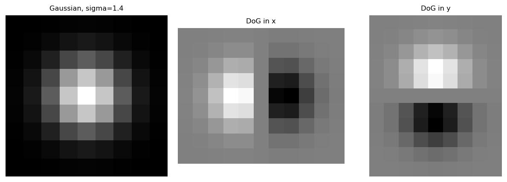
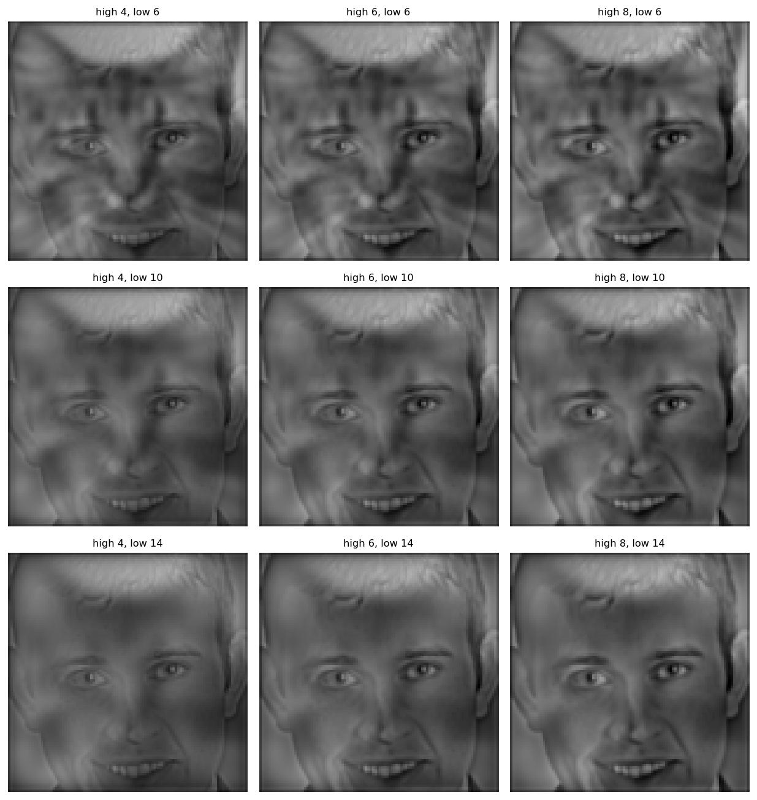
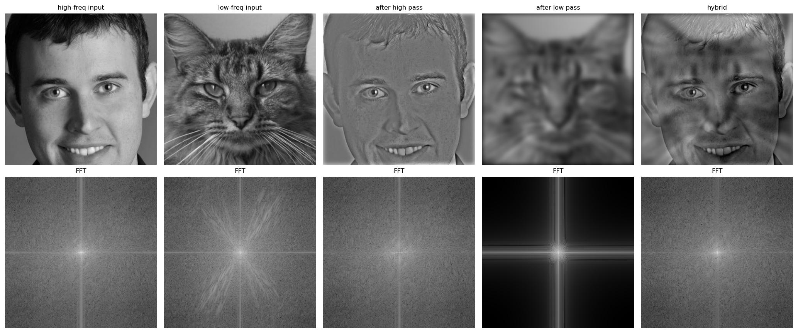
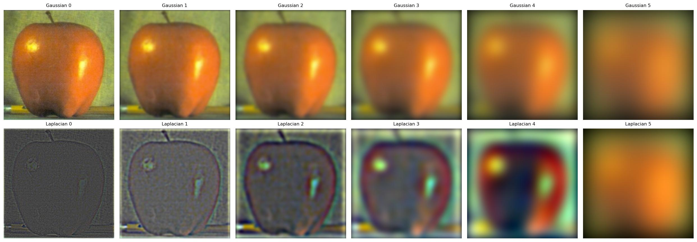
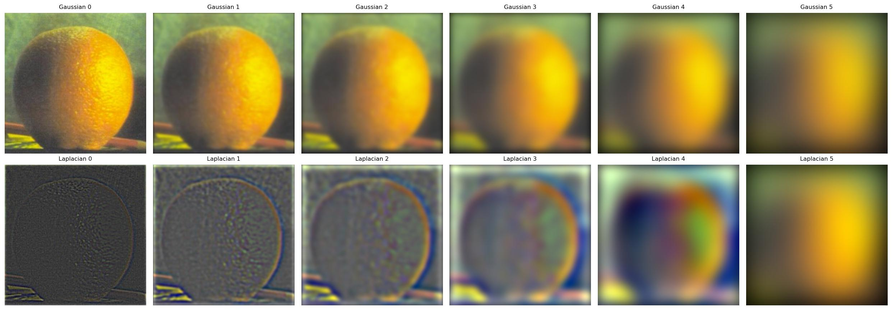
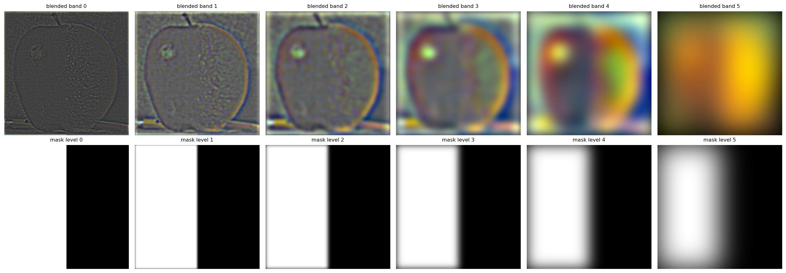
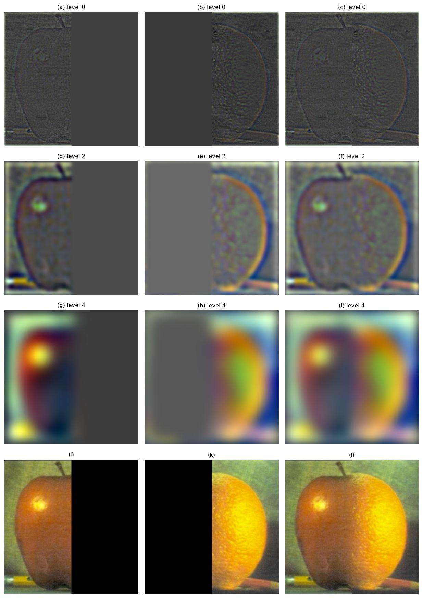
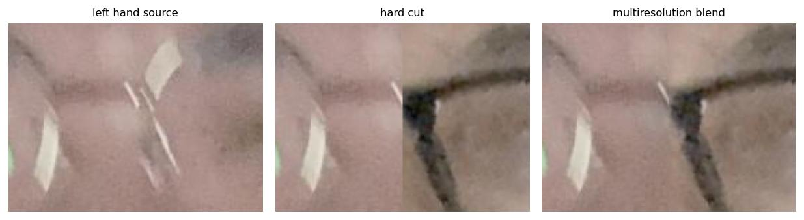
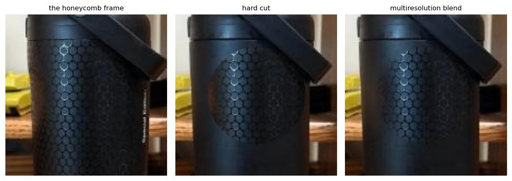
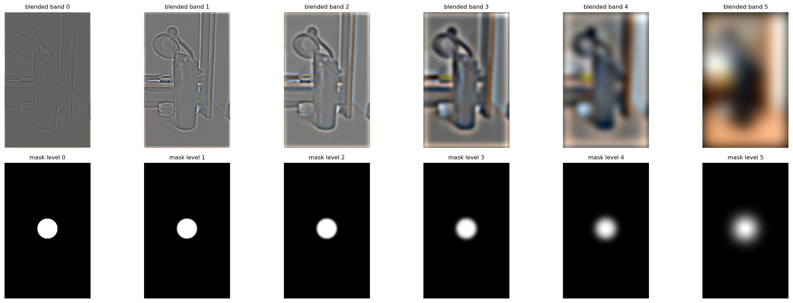

Overview
This project is about convolution, and about the idea that any image can be split into the parts that change quickly across the picture and the parts that change slowly. In part 1 I build convolution from scratch and then use it to find edges. Part 2 is four separate things that all turn out to be the same trick, because sharpening is putting the fast changing part back in, a hybrid image is one photo's fast changing part sitting on another photo's slow changing part, and joining two images without a seam is that same split done one frequency band at a time.
Everything below comes out of one python main.py, which takes about a
minute end to end. All the filters are in filters.py and I wrote them from
scratch, so there is no cv2.pyrDown, no
skimage.transform.pyramid_gaussian, and no library convolution anywhere except
the single scipy.signal.convolve2d call that part 1.1 exists to compare
against.
Part 1.1: Convolutions from scratch
A convolution is a sum over the kernel at every output pixel, so the most literal way to write it is with four nested loops, two walking over the output pixels and two walking over the kernel at each one. The single thing that makes this a convolution rather than a cross-correlation is the flip, where the kernel gets reversed in both directions before it starts sliding.
kernel = np.flip(np.flip(kernel, 0), 1)
padded = zero_pad(image, kh, kw, mode)
for i in range(out_h):
for j in range(out_w):
total = 0.0
for m in range(kh):
for n in range(kw):
total += padded[i + m, j + n] * kernel[m, n]
out[i, j] = totalThe two loop version is the same arithmetic in a different order. Instead of asking what goes into this output pixel, it asks where this kernel entry ends up. Each entry contributes one shifted, weighted copy of the whole image, so the two inner loops turn into a single array add and numpy does the per pixel work instead of Python.
for m in range(kh):
for n in range(kw):
out += kernel[m, n] * padded[m:m + out_h, n:n + out_w]How fast, and does it agree
All three are timed on the same 225 by 169 copy of my photo with the same 9x9 box filter,
and each figure is the median of three runs. The part I did not expect is that my two loop
version beats scipy. That is not because the code is clever, it is because
convolve2d is a general purpose routine and does not know the box filter is
separable either, and at 9x9 the kernel is small enough that 81 vectorised adds is hard to
beat. With a much bigger kernel scipy would win, because it can switch to an FFT and I
cannot.
Boundaries, and the even kernel problem
I pad with zeros, which is the easy choice but not a free one. Padding with zeros means the edge of the picture is sitting right next to a row of black, and a difference filter reads that as a strong edge, which is why there is a one pixel white frame around every binarised result further down. That frame is the padding, not anything that is in the photograph.
The other thing worth saying is what the scipy comparison is actually good for. The box
filter is symmetric, so it agrees with scipy whether or not I remember to flip the kernel,
which means it cannot catch a missing flip at all. D_x is antisymmetric, so it
only agrees if the flip is there and the sign comes out the right way round, and that is
the check that actually bites.
Part 1.2: Finite difference operator
The handout gives the two operators at the top of part 1, as
D_x = [1, 0, -1] and the same thing transposed for
D_y. Convolving with that subtracts the pixel on one side from the pixel on
the other, which is a derivative measured across two pixels. Skipping the middle pixel is
what keeps it symmetric, so the answer belongs to the pixel it is centred on rather than
sitting half a pixel off the way [1, -1] would. Doing it horizontally gives
the rate of change in x, which picks up vertical edges, and doing it vertically gives the
other one. Neither is much use on its own, because an edge at 45 degrees only shows up
weakly in both of them.
That is what the gradient magnitude is for. I treat the two partials as the two components of a vector at each pixel and take its length, which gives one number for how fast the brightness is changing there, regardless of which direction it happens to be changing in.
Picking a threshold
The magnitude image is continuous, so turning it into an edge map means picking a cut off, and there is no value that keeps every real edge and no noise. The grass at the bottom of the cameraman photo is genuinely high frequency, so any threshold low enough to catch the faint buildings on the horizon is going to catch the grass as well.
I went with 0.30. The photographer, the tripod and the camera all come out as closed outlines, the buildings on the skyline survive, and the grass is reduced to scattered speckle instead of a solid block. At 0.20 the bottom third of the image is just static, and at 0.45 the grass is clean but the tripod legs start breaking up into dashes, which I minded more. Losing a real structure bothers me more than leaving a bit of noise in.
Part 1.3: Derivative of Gaussian
The noise in part 1.2 has a better fix than just raising the threshold, which is to blur first. A difference filter amplifies whatever is changing fastest, and in a photo that is usually the sensor noise rather than the subject, so smoothing gets rid of it before we go looking for edges. That is why the results below binarise cleanly at 0.12 when the raw version needed 0.30.
That is two convolutions though, one to blur and one to difference. Convolution is associative, so instead we can convolve the two kernels together first and then apply the single combined filter, which gives the same answer with one pass over the image rather than two.
def dog_filters(sigma):
g = gaussian_2d(sigma)
return (convolve_two_loops(g, D_X, mode="full"),
convolve_two_loops(g, D_Y, mode="full"))

The filters themselves. The Gaussian is a symmetric blob, and the DoG filters are that same blob differentiated once, so each one is a bright lobe sitting next to a dark one, lined up along whichever axis it takes the derivative in.
Compared with part 1.2 the edges come out thicker and smoother and the grass is mostly gone. The tradeoff is that blurring costs you localisation, so an edge that was one pixel wide is now a few pixels wide, and fine texture that counted as a real edge at full resolution gets smoothed away along with the noise. A bigger sigma gives a cleaner result and blunter edges.
Part 2.2: Hybrid images
A hybrid image is the high frequencies of one picture added to the low frequencies of another. Up close your eye resolves the fine detail and that is what you end up seeing, and from across the room the fine detail is gone, only the smooth part survives, and the picture turns into something else.
def hybrid_image(im_high, im_low, sigma_high, sigma_low):
return high_pass(im_high, sigma_high) + low_pass(im_low, sigma_low)The two images have to be aligned first or the effect does not work at all, because your eye will only read the blurry face as the same face if its features are sitting where the sharp one's features are. The course supplies the alignment code: you click two matching points in each image, normally the eyes, and it rotates, scales and crops to line them up. Rather than click them every run I read the eye positions off each photo once and stored them, so the pairs come out identical every time.
Derek and Nutmeg needed more of that than I expected. Derek is an upright portrait looking straight down the lens, while Nutmeg is lying on a wooden step with her head cocked well over to one side, so getting their eyes onto the same line means turning one of the two a long way round. Which one moves is worth thinking about, because the code only ever turns the first image you hand it and leaves the second alone, so the finished hybrid comes out sitting at whatever angle that second image was at. I hand it the cat first. She gets turned to meet Derek, he stays as he was shot, and the result comes out upright instead of lying on its side.
Turning a photograph leaves empty corners, because there was nothing outside the frame to rotate into them. Rather than guess how much to trim, I carry a marker through the alignment alongside the picture so that afterwards I know exactly which pixels came from a real photograph, and then take the biggest square in the middle that is entirely real. Both images are also converted to greyscale, for the same reason as the lion and the cat further down: the two have quite different colour to them, and that difference does not read as either animal.
Choosing the cutoffs
There are two knobs here and they pull against each other. Raising the high pass sigma keeps more of the close up image, so it starts winning at every distance, and raising the low pass sigma blurs the far away image harder, so it stops competing up close but also loses its own detail. I could not think of a principled way to pick them, so I tried a grid of nine and looked at the results.


Every cell is shown small, because the far away view is the one that decides it. Going down the rows the cat gets blurred harder, and by the bottom row Derek has taken over at every distance. I went with the top middle one, where the two blurs are equal, which is the only row where the cat still comes through once you shrink it.
A change of expression
The handout suggests a change of expression as one of the things to try, and after two attempts that did not work I think this is the case the technique is really built for. These are two frames of the streamer Speed, grabbed a moment apart, so the headphones, the hoodie and the lighting are all the same and the only thing that really moves is his face. He is greenscreened over a Fortnite feed, so the background is not literally frozen between the two frames, but the game carries on behind him gently enough that the difference is small. I cropped and lined the pair up by hand rather than clicking eye points, since the frames were already registered to each other.
Up close you get the scrunched version: the squint, the pursed lips, the creases either side of the mouth. Shrink it down and all of that fine detail disappears and the face relaxes into the smile. The reason this pair behaves when my earlier attempts did not is that everything except the expression is already agreed between the two frames.
The two are lit the same, so a high pass added to a low pass stays in range and nothing gets bleached out the way my earlier attempts did. The backgrounds nearly match, so the low frequency layer carries his face and not a second room behind it. And the features are already in the same places at the same scale, so there is nothing for the alignment to compromise on. Taking two frames out of one video gets you all three for free, which is worth knowing if you would rather not fight for them.
I also put the scrunched frame on the high frequency side rather than the other way round, which matters. That take has the creases and the squint lines in it, and creases are fine detail, so it has more to contribute to a layer that only keeps fine detail. The relaxed take is smoother, which makes it the better one to blur. Swapping them gives a weaker result in both directions.
A lion and a cat
The other thing the handout suggests is a morph between different objects, so this one is a Maine Coon over a lion. Both are shot head on against a plain dark background at roughly the same size, which is most of the alignment done before any filtering happens.
Up close it is clearly the cat. The ear tufts, the whiskers and the narrow muzzle are all fine detail and they all survive the high pass. Shrink it and those go, and the lion comes through properly, with its own eyes, its flat broad muzzle and the mane spreading out past where the cat's head ended.
I ended up blurring both images by the same amount, which turns out to be the thing that makes it work. One filter throws away everything coarser than that point and the other keeps everything coarser, so between them they cover the whole picture exactly once, with nothing dropped and nothing counted twice. My first go blurred the lion far harder than that, which left a band in the middle that neither image was carrying, and that band is where a good deal of what makes a lion look like a lion lives. Blur it too little instead and the two start to overlap, and then you can see both animals at once at every distance, which is just a double exposure.
Both images are turned to greyscale first, because one animal is warm gold and the other cool grey, and that difference does not read as either animal, it reads as a colour cast lying over the whole picture. Greyscale is what the original hybrid images paper uses for most of its examples too.
The lion is also brightened to sit in the same range as the cat, and it matters which of the two you adjust. The blurred image is the base that the fine detail gets laid on top of, and that detail pushes pixels both up and down, so if the base is dark then a lot of it falls off the bottom and goes flat black. The lion is much the darker of the two, so as the base it is the one that needs lifting. I had them the other way round at first, with the dark lion supplying the detail, and a good chunk of the picture crushed to black.
Why this one is the weakest of the three
It does work now, but it took trying it both ways round and a dozen different blur settings to get there, and it is still the weakest of the three.
A hybrid only works if the two pictures look genuinely different once they are blurred, since the blurred version is all you have left when you step back. Blur Derek and blur Nutmeg and you get two very different shapes: a narrow dark head on a pale grey background, against pale fur filling the whole frame. Blur the lion and blur the cat and you get almost the same picture twice, a bright symmetric furry mass in the middle of a black frame, with a wide ruff and a dark muzzle sitting in the same place on both.
That is the whole problem, and no amount of adjusting the blurs can fix it, because it cannot invent a difference that was never in the photographs. Keeping more of the cat does not help either. It just lets the ear tufts through into the close up view as well, so you end up seeing both animals at once at every distance rather than one and then the other.
The lesson I would take from it is that picking the pair is most of the work, and that what you want is not two subjects that are different in category but two photographs that are different in layout. A lion and a house cat are miles apart as animals and very nearly the same photograph.
What the frequencies actually look like


Top row is the pictures and the bottom row is the log magnitude of each one's Fourier transform, with the low frequencies in the middle and the high ones out at the corners.
The bottom row is the part worth staring at. Both of the inputs look broadly similar, with energy everywhere and the middle brightest, because that is what photographs look like. After the low pass the corners have gone black, which means those frequencies are simply not in the image any more, and after the high pass it is the other way round with the very centre dark. The hybrid's spectrum is then the two of them laid on top of each other, bright in the middle from the cat and bright at the edges from Derek, which is what adding them together should give.
Part 2.3: Gaussian and Laplacian stacks
A stack is the same idea as a pyramid except that nothing gets downsampled. Each level is blurred harder than the one before it, but every level stays the same size as the original. That wastes memory, and in exchange every level lines up with every other level pixel for pixel, which is what makes the blending in part 2.4 easy, because there is no upsampling or interpolation to worry about.
I double sigma at each level, which is what matches a pyramid, since halving the resolution and blurring by sigma covers the same band of frequencies as blurring by 2 sigma at full size.
def gaussian_stack(im, levels, sigma=2.0):
return [im] + [blur(im, sigma * (2 ** i)) for i in range(levels - 1)]
def laplacian_stack(im, levels, sigma=2.0):
gauss = gaussian_stack(im, levels, sigma)
lap = [gauss[i] - gauss[i + 1] for i in range(levels - 1)]
lap.append(gauss[-1]) # the residual, so the stack sums back exactly
return lap
Each Laplacian level is the difference between two neighbouring blurs, so it holds exactly
the frequencies that survived one of them and not the other, which is what makes each level
a single band. Keeping the last Gaussian on the end is what lets the whole thing add back
up to the original, and it does, to 1.11e-16.


Apple. The top row is the Gaussian stack getting progressively smoother, and the bottom row is the Laplacian stack, contrast stretched so you can actually see it, going from fine texture on the left to broad shading on the right.


The same for the orange. The pitted skin dominates the first Laplacian level.
Part 2.4: Multiresolution blending
If you want half an apple joined to half an orange, the obvious thing to do is cut down the middle and paste. That gives you a hard line, because the two halves disagree about brightness and colour right where they meet. The other obvious thing is to fade one into the other over a wide band, but then you can see the fine texture of both images in the overlap and the fruit ends up looking transparent.
Burt and Adelson's point is that those two failures want opposite things, because the broad colour difference needs a wide, gentle transition and the fine texture needs a narrow one. So rather than picking one, we split the images into frequency bands and give each band its own transition width. The Gaussian stack of the mask does that on its own, since at the coarse levels the mask has been blurred into a wide ramp while at the fine levels it is still more or less a step.
for i in range(levels):
m = gauss_mask[i][:, :, None]
blended.append(m * lap1[i] + (1 - m) * lap2[i])
result = sum(blended)Comparing the last two is the whole point. Same two images and the same seam position, and the naive cut has a line down the middle that you cannot unsee, while the blended one does not.


Top row is each blended band, contrast stretched. The bottom row is the mask at the matching level, and that is the row that explains the whole method, going from a hard step on the left to a soft ramp spanning half the image on the right.
Recreating Szeliski figure 3.42


The rows are Laplacian levels 0, 2 and 4, and then the finished result. The left column is the apple weighted by the mask, the middle is the orange weighted by one minus the mask, and the right is the two of them added together.
Reading down the right hand column is the clearest way to see what is going on. At level 0 the two halves meet along a line that is almost exactly the seam, because the mask is still sharp there, and by level 4 the transition has spread across most of the width of the image. Every band is joined at a different scale, and adding them all up gives a join that works at all of those scales at once.
My own, with a straight seam
Two of the faces from my photo, already aligned on the eyes back in part 2.2, joined down the middle. Comparing the third and fourth images tells the same story as the oraple, where the cut leaves a visible vertical line running down where the two skin tones meet and the blend does not.


Cropped to the middle of the face. Left is the left hand source on its own, middle is the hard cut, right is the blend. The cut puts one person's cheek straight against the other's with a step in brightness along the join, and the blend walks between them.
My own, with an irregular mask
The mask does not have to be a line, and this is the one I would actually show someone. My water bottle has a honeycomb texture on one side and a smooth finish on the other, so I photographed it twice and turned only the bottle, leaving the camera where it was. Then I put a circle on the body of the bottle and blended the textured frame inside it onto the smooth frame outside it, so a patch of honeycomb sits on a smooth bottle and dissolves at the edges into plain black.
The hard cut gives itself away in two ways at once. The honeycomb stops along a circular arc, which is not a thing a real bottle does, and the disc as a whole sits at a slightly different tone from the bottle around it, because the two frames were exposed a moment apart and are not quite identical. Between them those two make the circle impossible to miss. Averaged over the whole image the cut and the blend differ by only 0.001, but right on the edge of the circle they differ by 0.014, and that thin ring is the entire difference between something that looks like a bottle and something that looks like a sticker.


Cropped to the circle. Left is the honeycomb frame on its own, middle is the hard cut with its disc showing plainly, right is the blend.
It also shows why the mask needs its own Gaussian stack rather than a single blur. The tonal step between the two frames is a low frequency disagreement and needs a wide, soft transition to disappear. The honeycomb is fine texture and needs a narrow one, because a wide transition would smear the hexagons into mush long before the edge of the circle. One mask, blurred a different amount at each level, gives both at once, which is the whole argument of the Burt and Adelson paper in one picture.


Top row is each blended band and the bottom row is the circular mask at the matching level, going from a hard disc on the left to a soft cloud on the right.
What I learned
The thing I keep coming back to is that nearly every part of this project turned out to be the same operation wearing a different hat. Finding an edge, sharpening a photo, making a hybrid image and hiding a seam all come down to splitting the image into a fast changing part and a slow changing part and then treating those two parts differently. Once I had the Gaussian and a subtraction working, parts 2.1 through 2.4 were mostly about deciding what to do with the two halves.
The other thing, less grand but probably more useful, is that the eye is a bad judge of whether two images are the same. In part 1.3 the two routes to a gradient agreed to fifteen decimal places and still rendered as visibly different pictures, because I was stretching each one to its own maximum and a padding artefact at the border was setting that maximum. In part 2.2 it went the other way: the lion and the cat looked like a promising pair and measuring them showed two thirds of their coarse structure was shared, which no amount of tuning was going to fix. Both times the number and the picture disagreed, and both times the fix only arrived once I stopped trusting the picture.